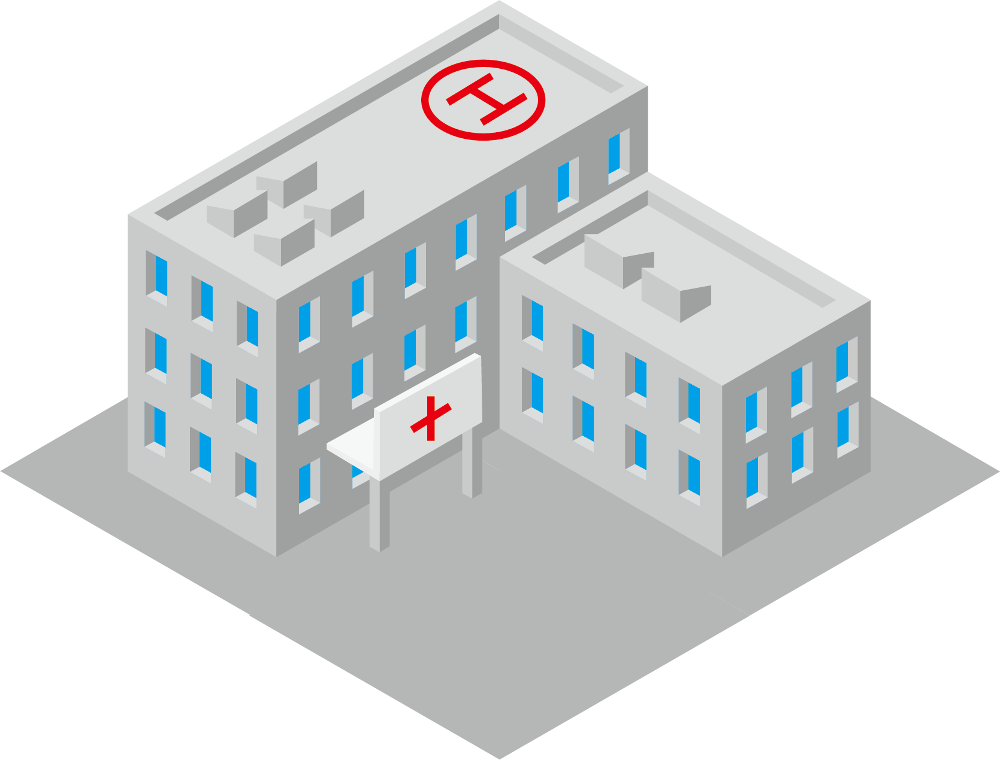
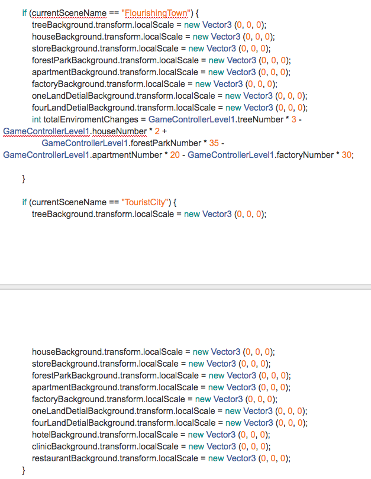

I want to use "Times New Roman" for the paragraph.
Color
I want to use light grey (#f2f2f2) as main color in the website such as image backgrond
The types of imagery
My project image
My daily image
Some background image
A draft of a bio
My name is Shuangsheng Miao, a fourth-year international student in the SIAT program. I am passionate about mobile apps development, website design and game design; those are the reasons why I chose SIAT in the first place. Before I chose this major, I thought I could easily design some popular artwork for users. After I got started in my studies I realized that my ideas were wrong. I need to do a lot of work before starting to design a project such as analysis, tasks and evaluation. My goal is to design a good strategy game that can work with smart phone.
A process analysis of two projects
Ethos 1
In this specific work, I was asked to add 3 activities, including implicit intent and explicit intent, to build a fishing app which can reduce the time and effort it takes for local fisherman to access vital information so they may have peace of mind while fishing. During the primary stage, I formulated a question about how to save users’ time if they use my app to plan their fishing trips. I checked a lot of information and built a primary vision for my app.
The vision of my app is my original idea. I listed all the major fishing spots around Vancouver in order to show the names of the different fishing areas in this activity.I also found some people to help me to task this app and asked them the assess the results. Based on this information, I knew I make some mistakes in the primary working because I did not think more about users’ cognitive processes. For instance, many users plan to go fishing; however they know nothing about the different fishing spots and they cannot choose any spot for fishing in this activity. I analyzed these mistakes and designed a new vision for my app. This vision is better than the original vision because users will be able to choose the fish they are interested in catching, which is easier than choosing a fishing spot by name alone, without any additional information about the possible catch. This vision for my app start page shows how my design re-focused.
After a few tries, I finished building the design concepts. Next, I needed to think about the technique concepts for my app. I added implicit intent to open a regulation website from an activity and explicit intent to let users open other activities. I used SQlite database for Storing content data for offline viewing because it is relatively easy to create and delete data from the database. This is an example of a SQlite database for one activity.
I thought the biggest challenge was getting an online database for the fishing app. I added weather and tides to my app and we know the weather and tide will change all the time; therefore, it was very difficult to add the huge database to the app. If I add a huge database to the app, the application will run slowly. I will use the AsyncTask to solve this problem.
Ethos 2
In this project, my group create 2D and half buildings game. During the game, player will need to complete goal lists with various required indexes by using limited funds and other elements in specified rounds. There are totally three levels in this game, and they all have different conditions, elements, and requirements. There are have 3 different levels in this game and players should complete different missions in differents levels.
At the first, my group should consider the main game play for this game and we should make sure the game have what type of fun. We search lots of information for website and we decide to build a 2D and half game.In this game we add different games of fun and some challenges. For example, we will randomly giving some gold lands and give them some bad weather in the game. All of the elements will influence the game.
For the design part, we think build these 2D and half buildings are very difficult for us because none of us were better at using AI. These are some vision examples for our game.

For this building, we search some examples from website and build by ourselves in the AI. We finally choosing grey and red for these building because it will have good vision during the game.
For the coding part, we think the buildings collision are very difficult for us because each build will need different numbers of lands. For example, if players want to build a park, they need 4 lands. If players want to build a pub, they need to 2 lands. We also need to think about the collision if you want to add a building near to other buildings. We collect lots of numbers to know the datas and try the datas for many different times.

 The vision of my app is my original idea. I listed all the major fishing spots around Vancouver in order to show the names of the different fishing areas in this activity.I also found some people to help me to task this app and asked them the assess the results. Based on this information, I knew I make some mistakes in the primary working because I did not think more about users’ cognitive processes. For instance, many users plan to go fishing; however they know nothing about the different fishing spots and they cannot choose any spot for fishing in this activity. I analyzed these mistakes and designed a new vision for my app. This vision is better than the original vision because users will be able to choose the fish they are interested in catching, which is easier than choosing a fishing spot by name alone, without any additional information about the possible catch. This vision for my app start page shows how my design re-focused.
The vision of my app is my original idea. I listed all the major fishing spots around Vancouver in order to show the names of the different fishing areas in this activity.I also found some people to help me to task this app and asked them the assess the results. Based on this information, I knew I make some mistakes in the primary working because I did not think more about users’ cognitive processes. For instance, many users plan to go fishing; however they know nothing about the different fishing spots and they cannot choose any spot for fishing in this activity. I analyzed these mistakes and designed a new vision for my app. This vision is better than the original vision because users will be able to choose the fish they are interested in catching, which is easier than choosing a fishing spot by name alone, without any additional information about the possible catch. This vision for my app start page shows how my design re-focused.
 After a few tries, I finished building the design concepts. Next, I needed to think about the technique concepts for my app. I added implicit intent to open a regulation website from an activity and explicit intent to let users open other activities. I used SQlite database for Storing content data for offline viewing because it is relatively easy to create and delete data from the database. This is an example of a SQlite database for one activity.
After a few tries, I finished building the design concepts. Next, I needed to think about the technique concepts for my app. I added implicit intent to open a regulation website from an activity and explicit intent to let users open other activities. I used SQlite database for Storing content data for offline viewing because it is relatively easy to create and delete data from the database. This is an example of a SQlite database for one activity.
 I thought the biggest challenge was getting an online database for the fishing app. I added weather and tides to my app and we know the weather and tide will change all the time; therefore, it was very difficult to add the huge database to the app. If I add a huge database to the app, the application will run slowly. I will use the AsyncTask to solve this problem.
I thought the biggest challenge was getting an online database for the fishing app. I added weather and tides to my app and we know the weather and tide will change all the time; therefore, it was very difficult to add the huge database to the app. If I add a huge database to the app, the application will run slowly. I will use the AsyncTask to solve this problem.